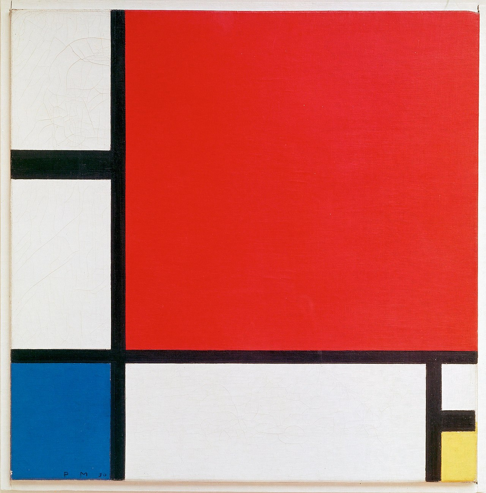
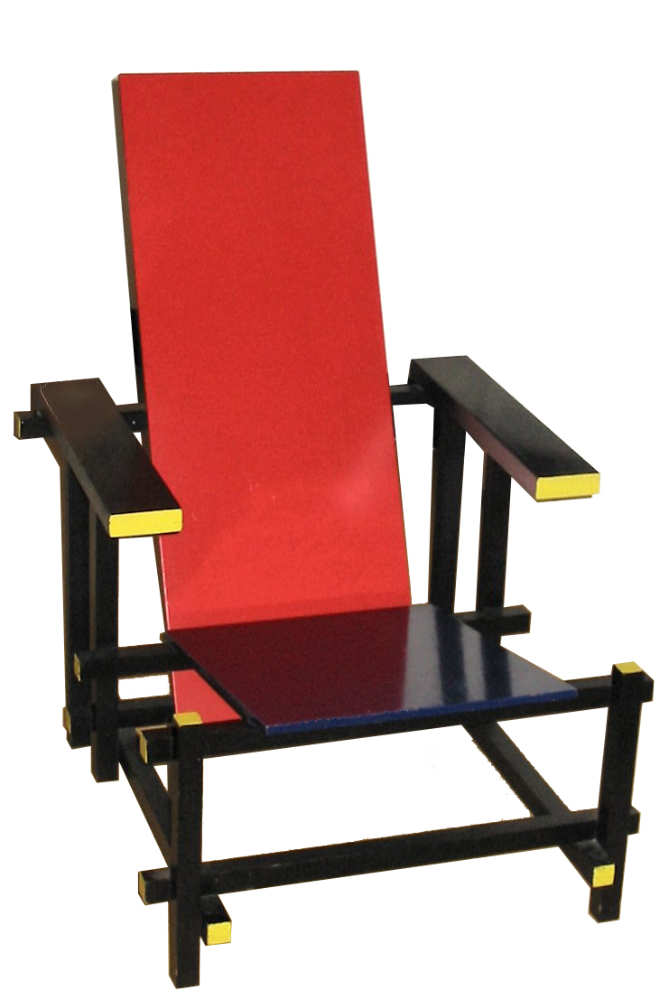
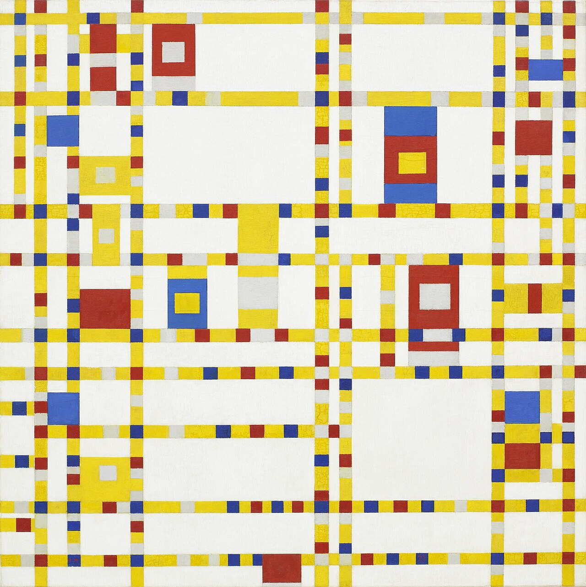
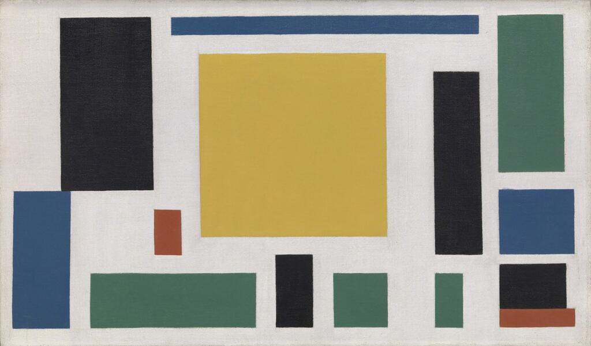
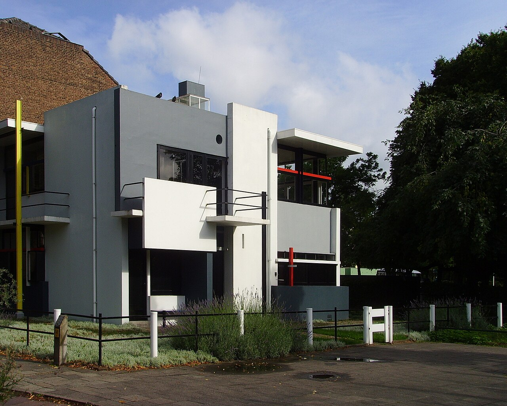
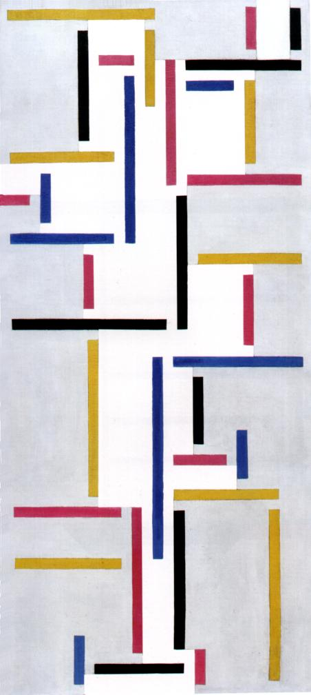
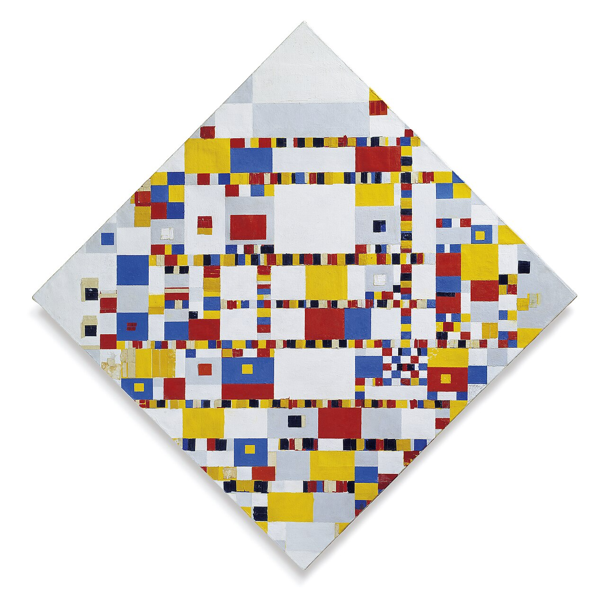
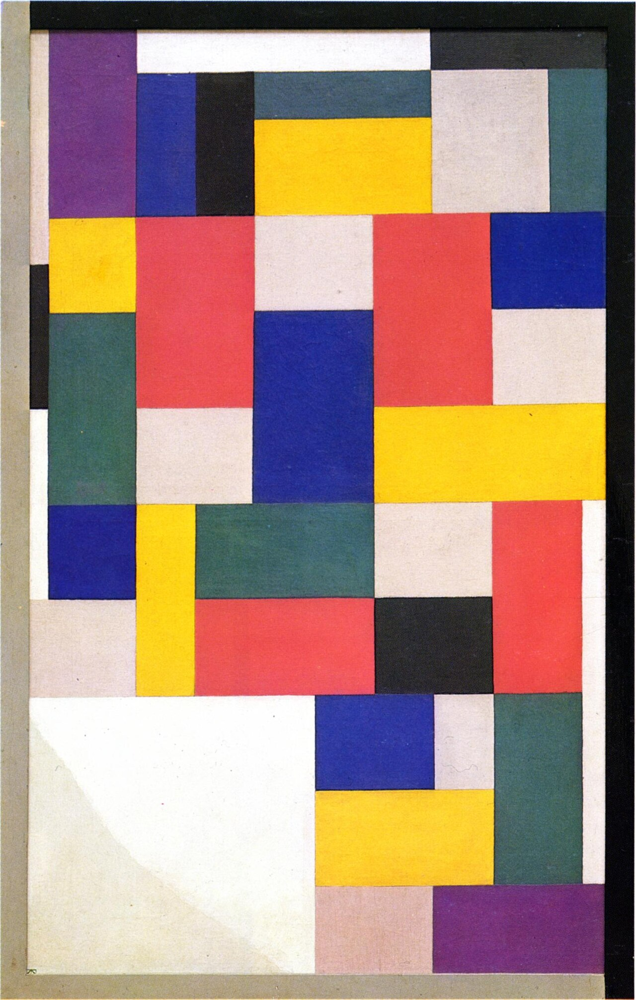
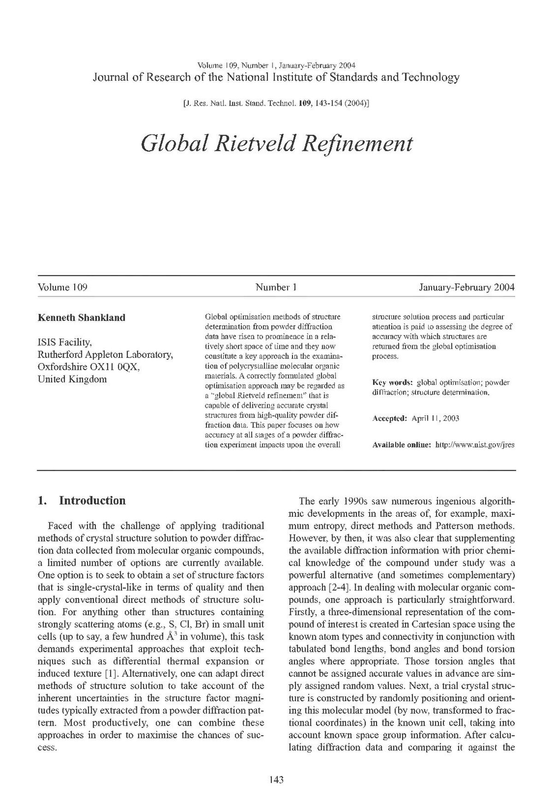

Meesterwerk: Compositie met Rood, Geel en Blauw
Piet Mondrian, 1930

⚜️ UITGEBREIDE STIJLFIGUREN
⬛ ELEMENTAIRE VORMEN
Rechthoeken en lijnen: Alleen horizontale en verticale lijnen. Geen diagonalen, geen curves. De essentie van vorm.
Primaire kleuren: Alleen rood, geel, blauw (plus zwart, wit, grijs). De grondstoffen van alle kleur.
⚖️ BALANS & EVENWICHT
Asymmetrische evenwicht: Geen symmetrie, maar dynamisch evenwicht. De compositie is "correct" zonder spiegelbeeld te zijn.
Verhoudingen: De "dynamische evenwicht" zoeken tussen grote en kleine vlakken, dikke en dunne lijnen.
🔲 UNIVERSELE WAARDEN
Neo-plasticisme: Van Doesburg's term. Niet persoonlijk, niet nationaal, niet tijdgebonden - universeel.
Harmonie: Kunst als reflectie van universele orde. De schilderijen zijn filosofische statements.
🏠 TOTALE KUNST
Gesamtkunstwerk: Niet alleen schilderkunst, maar ook architectuur, meubels, typografie. Alles in één stijl.
Functionalisme: Vorm volgt functie. Kunst moet bruikbaar zijn, niet alleen mooi.
🔗 TIJDSGEEST CONTEXT (1917-1931)
🏛️ POLITIEK PERSPECTIEF: De Eerste Wereldoorlog (1914-1918) maakt internationale samenwerking onmogelijk. Nederland is neutraal en wordt toevluchtsoord voor kunstenaars. De revolutie in Rusland (1917) inspireert utopische ideeën. De Stijl is utopisch, internationalistisch, pacifistisch - kunst als alternatief voor oorlog.
📚 LITERAIR PERSPECTIEF: Het manifest als literair genre - De Stijl publiceert veel theoretische teksten. Theo van Doesburg schrijft gedichten zonder woorden ("woordloos gedicht"). De afwijzing van traditionele narratief. Literatuur moet net als beeldende kunst abstract worden.
🧠 PSYCHOLOGISCH PERSPECTIEF: De zoektocht naar objectiviteit, het verwerpen van subjectiviteit. De "reinheid" van de geest door abstractie. De mens als deel van universele orde, niet als individu. Mystiek van getallen en verhoudingen (gulden snede).
⚙️ HISTORISCH PERSPECTIEF: De industriële massaproductie maakt functionalisme mogelijk. De woningnood na WO I vraagt om efficiënte, goedkope architectuur. Nieuwe materialen: gewapend beton, staal, glas. De Stijl-architectuur is modern, hygiënisch, licht.
🎭 FILOSOFISCH PERSPECTIEF: Neoplatonisme: de wereld van ideeën boven de zintuiglijke wereld. Hetosophie (Blavatsky): universele spirituele waarheden. De utopie van een nieuwe samenleving door kunst. De Stijl is een religie zonder God - de abstractie als heilig.
🎨 MEESTERWERKEN - GEDETAILLEERDE ANALYSE
1. "Compositie met Rood, Geel en Blauw" (1930) — Piet Mondrian
Privécollectie · 46 × 46 cm · Olieverf op doek
Achtergrond: Een van Mondrian's meest bekende werken, geschilderd in Parijs. Het toont zijn volwassen stijl: asymmetrische balans, primaire kleuren, zwarte lijnen. Het is bijna een logo van De Stijl geworden.
🔍 STIJLANALYSE
Compositie: Niet symmetrisch, maar in evenwicht. Het grote rode vlak links wordt gecompenseerd door kleinere gele en blauwe vlakken rechts. De witruimte is even belangrijk als de gekleurde vlakken.
Lijnen: Zwarte lijnen scheiden de vlakken. Ze zijn niet alleen grenzen maar ook elementen op zich. De dikte varieert subtiel - het is niet mechanisch.
Kleur: Rood, geel, blauw - de primaire kleuren. Wit en zwart. Mondrian gebruikte soms jaren om de "juiste" verhouding te vinden.
Universalisme: Dit is geen landschap, geen portret, geen verhaal. Het is pure relatie: kleur, lijn, vlak. Mondrian zocht "universele schoonheid".
2. "Rood-blauwe Stoel" (1917) — Gerrit Rietveld
Verschillende versies · 88 × 26 × 66 cm · Geschilderd hout

Achtergrond: Oorspronkelijk ontworpen in ongeverfd hout, later geverfd in de De Stijl-kleuren. Niet comfortabel, maar conceptueel belangrijk. Het meubel als abstracte sculptuur.
🔍 STIJLANALYSE
Ontleding: De stoel is teruggebracht tot zijn essentie: een zitvlak, een rugleuning, poten. Geen versiering, alleen constructie. Het is "eerlijk" ontwerp.
Kleur: De rode rug, de blauwe zitting, de gele armleuningen (in sommige versies). De kleuren benadrukken de verschillende delen. Het is een driedimensionaal Mondriaan.
Ruimte: De stoel neemt weinig ruimte in - doorzichtig, luchtig. De negatieve ruimte (de openingen) is even belangrijk als de houten delen.
Invloed: Deze stoel beïnvloedde generaties ontwerpers. Het concept van "form follows function" en de esthetisering van functionaliteit worden hier geboren.
3. "Broadway Boogie Woogie" (1942-1943) — Piet Mondrian
MoMA, New York · 127 × 127 cm · Olieverf op doek

Achtergrond: Mondrian's laatste voltooide werk, geschilderd in New York. Geïnspireerd door de stad: de straten, de jazz, de energie. Een verrassende ontwikkeling in zijn strenge stijl.
🔍 STIJLANALYSE
Ritme: De kleine blokjes kleur pulseren als muziek. De titel verwijst naar jazz - boogie woogie is een pianostijl. Het is Mondrian's meest "muzikale" werk.
Kleur: Niet alleen primaire kleuren, maar ook grijs, wit, en kleurvlakken die tegen elkaar praten. Het is levendiger, dynamischer dan zijn vroege werk.
Stad: Het raster lijkt op de straten van Manhattan. De gele lijn is Broadway. Mondrian, die altijd universeel wilde zijn, werd beïnvloed door de concrete stad.
Ontwikkeling: Dit toont dat De Stijl niet statisch was. Mondrian bleef zoeken, verfijnen, veranderen. De lijnen worden vlakken, de rust wordt beweging.
4. "Compositie VIII (De Koe)" (1918) — Theo van Doesburg
MoMA, New York · 64 × 50 cm · Olieverf op doek

Achtergrond: Van Doesburg's abstractie van een koe - van herkenbaar naar volledig abstract. Het toont het De Stijl-proces: de natuur wordt geometrie. Een belangrijk pedagogisch werk.
🔍 STIJLANALYSE
Abstractie: Van Doesburg toonde vaak het proces: eerst de koe, dan steeds abstracter, tot alleen vlakken overblijven. Het is een leermiddel: zo werkt abstractie.
Diagonaal: Let op: Van Doesburg gebruikt diagonalen! Dit was later een breukpunt met Mondrian, die diagonaal taboe verklaarde. Maar hier is het nog binnen De Stijl.
Kleur: Primair, maar ook bruin en grijs. Van Doesburg was minder strikt dan Mondrian. Hij zocht balans tussen orde en expressie.
Proces: Het werk laat zien dat abstractie niet willekeurig is. Het is een distillatie van de werkelijkheid, niet een verwerping ervan.
5. "Rietveld Schröder Huis" (1924) — Gerrit Rietveld
Utrecht, Nederland · Woonhuis · Beton, staal, hout, glas

Achtergrond: Het enige gebouw dat volledig volgens De Stijl principes is ontworpen. Commissioned by Truus Schröder, die meedacht in het ontwerp. UNESCO Werelderfgoed sinds 2000.
🔍 STIJLANALYSE
Flexibiliteit: De bovenverdieping heeft geen vaste muren, alleen schuifpanelen. De ruimte is aanpasbaar - revolutionair voor 1924.
Kleur: Buiten: grijs, zwart, wit met primaire kleuren als accenten. Binnen: witte muren, gekleurde vloeren en meubels. Het huis is een driedimensionaal schilderij.
Constructie: Betonnen palen (zichtbaar!) dragen het gebouw. De muren zijn niet dragend - ze zijn alleen maar schermen. Dit is modernistisch fundament.
Leefbaarheid: Het is niet alleen een statement, maar ook een thuis. Truus Schröder woonde er tot haar dood in 1985. Het bewijst dat De Stijl praktisch kan zijn.
6. "Compositie" (1920) — Georges Vantongerloo
Privécollectie · 80 × 60 cm · Olieverf op doek

Achtergrond: Vantongerloo was een van de oprichters van De Stijl. Zijn werk is minder bekend dan Mondriaans, maar even radicaal. Hij zocht de wiskundige basis van schoonheid.
🔍 STIJLANALYSE
Wiskunde: Vantongerloo gebruikte wiskundige verhoudingen - de gulden snede, de Fibonacci-reeks. De verhoudingen van de vlakken zijn exact berekend.
Ruimte: Diepte door overlapping - het is bijna reliëf. De vlakken lijken voor en achter elkaar te zweven. Dit is dynamisch evenwicht in actie.
Kleur: Primair, maar subtiel gemengd. Het blauw is niet één blauw, maar verschillende tinten. Vantongerloo was kleurspecialist.
Architectuur: Later werd Vantongerloo architect. Dit schilderij is bijna een plattegrond - ruimtelijk denken in twee dimensies.
7. "Ritme van een Russische Dans" (1918) — Theo van Doesburg
Privécollectie · 50 × 60 cm · Olieverf op doek

Achtergrond: Geïnspireerd door Russische volksdansen die Van Doesburg zag. De dansbewegingen worden vertaald naar abstracte vormen. Het toont dat De Stijl niet stil hoeft te staan.
🔍 STIJLANALYSE
Beweging: De kleine, verspringende vlakken suggereren danspasjes. Het is bijna animatie - alsof de figuren bewegen. Van Doesburg wilde dynamiek in de statische compositie.
Ritme: De herhaling van vormen creëert een beat, een maat. Het is muziek voor het oog. De kleurcontrasten zijn accenten, drumslagen.
Constructivisme: Dit werk staat op de grens van De Stijl en het Russisch Constructivisme. Van Doesburg was geïnteresseerd in de Russische avant-garde.
Serie: Van Doesburg maakte meerdere "Ritme" schilderijen. Het was een zoektocht - hoe ver kan abstractie gaan en toch herkenbaar blijven?
8. "Victory Boogie Woogie" (1942-1944) — Piet Mondrian
Gemeentemuseum Den Haag · 127 × 127 cm · Olieverf en papier op doek

Achtergrond: Mondrian's laatste werk, onvoltooid bij zijn dood. Geschilderd in New York tijdens WOII. De titel verwijst naar de geallieerde overwinning. Het is zijn meest complexe werk.
🔍 STIJLANALYSE
Complexiteit: Geen zwarte lijnen meer - alleen gekleurde stroken die elkaar kruisen. Het is een web van kleur. Mondrian's stijl evolueerde tot het einde.
Kleur: Meer kleuren dan ooit - niet alleen primair, maar ook pastel, grijs. De kleurvlakken zijn smaller, sneller. Het stadslicht van New York.
Papier: Mondrian plakte stroken papier op het doek - een collage-techniek. Het is informeler, experimenteler. De oorlog maakte hem flexibeler.
Victorie: Het optimisme spat eraf. Ondanks de oorlog, ondanks zijn ziekte (longontsteking), maakte Mondrian dit vierende werk. Kunst als hoop.
9. "Pure Schilderkunst" (1920) — Theo van Doesburg
Privécollectie · 60 × 60 cm · Olieverf op doek

Achtergrond: Een manifest in verf - de titel zegt het al. Van Doesburg's visie op wat schilderkunst zou moeten zijn: puur, abstract, universeel. Geen verwijzing naar de buitenwereld.
🔍 STIJLANALYSE
Pure vorm: Slechts drie kleuren (rood, geel, blauw) en wit. Slechts rechthoeken. Geen grijs, geen zwart lijnen, geen complicaties. Het absolute minimum.
Evenwicht: De compositie is bijna symmetrisch, maar niet helemaal. De blauwe strook bovenaan breekt de balans. Het is statisch maar niet saai.
Filosofie: Dit is De Stijl in een notendop. Van Doesburg schreef: "De schilderkunst is geen verhaal, geen decoratie, maar zuivere constructie van het zichtbare."
Invloed: Dit type werk beïnvloedde later de Concrete Kunst en de Minimal Art. Het idee dat kunst over zichzelf gaat, begint hier.
10. "Bijzettafel" (1923) — Gerrit Rietveld
Verschillende versies · 60 × 50 × 50 cm · Geschilderd hout

Achtergrond: Een eenvoudige bijzettafel die Rietveld ontwierp voor de Schröder woning. Geproduceerd door de firma Gerard van de Groenekan. Functioneel ontwerp als kunstwerk.
🔍 STIJLANALYSE
Constructie: De tafel bestaat uit simpele houten planken, rechtop gezet. Geen versiering, alleen functionele verbindingen. Het is eerlijk - je ziet hoe het werkt.
Kleur: Primair rood, geel, blauw, plus zwart en wit. De kleur maakt de delen zichtbaar: het blad, de poten, de verbindingen. Het is een schilderij in ruimte.
Minimalisme: Zo weinig materiaal mogelijk, zo veel effect mogelijk. Rietveld vroeg zich af: wat is essentieel aan een tafel? Alleen een vlak op hoogte.
Massaproductie: Het ontwerp is eenvoudig genoeg om goedkoop te produceren. Rietveld droomde van democratisch design - mooie dingen voor iedereen.
📚 CONCLUSIE: DE PURE ORDE
De Stijl leert ons:
- Dat minder meer is: Terug naar de essentie - vorm en kleur
- Dat kunst universeel kan zijn: Geen nationaliteit, geen individualiteit
- Dat abstractie niet willekeurig is: Het is distillatie, niet destructie
- Dat schoonheid functioneel is: Meubels, huizen, steden kunnen "goed" zijn
- Dat harmonie mogelijk is: Ondanks de chaos van de wereld
De Stijl is de laatste utopie - kunst als redding van de wereld.